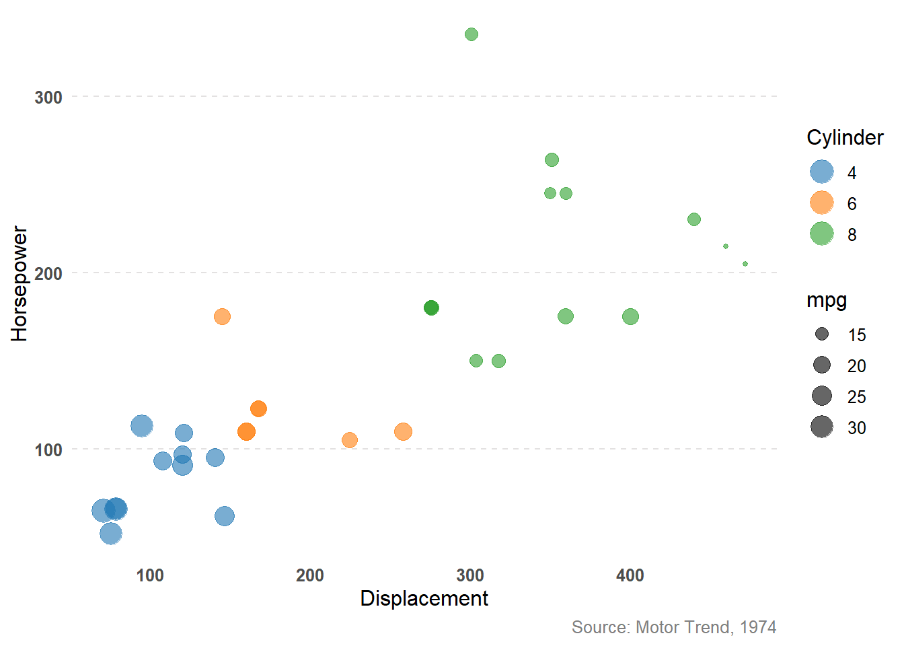
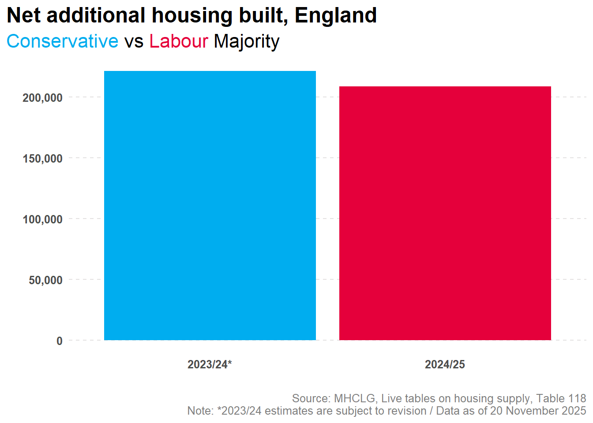
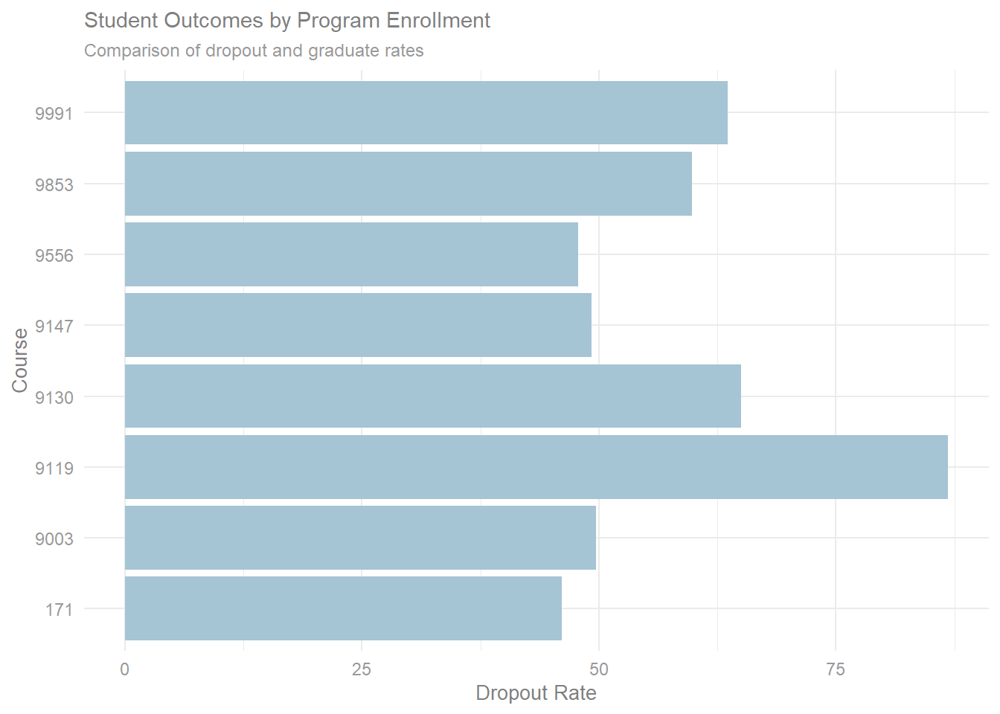
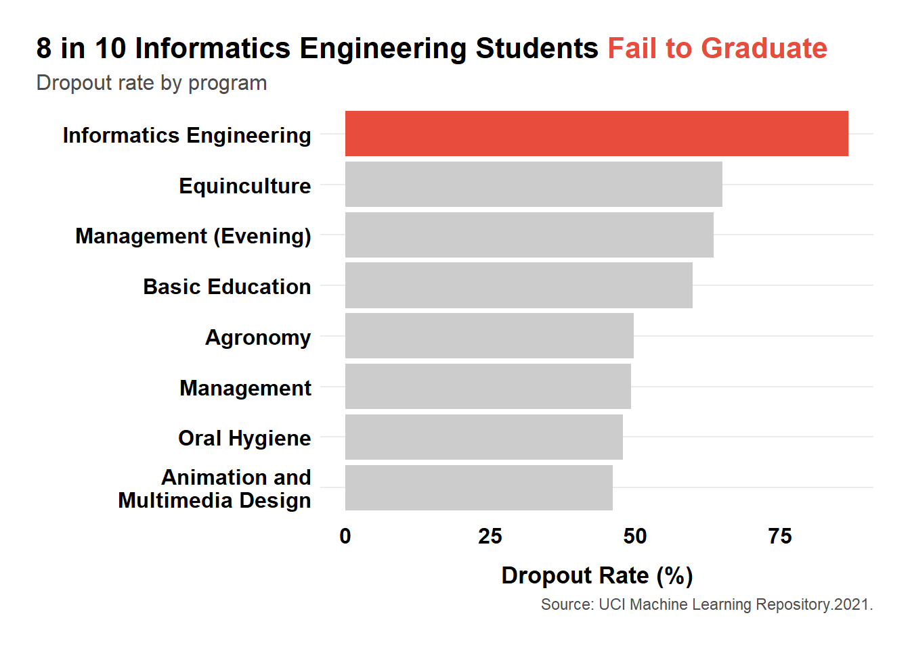
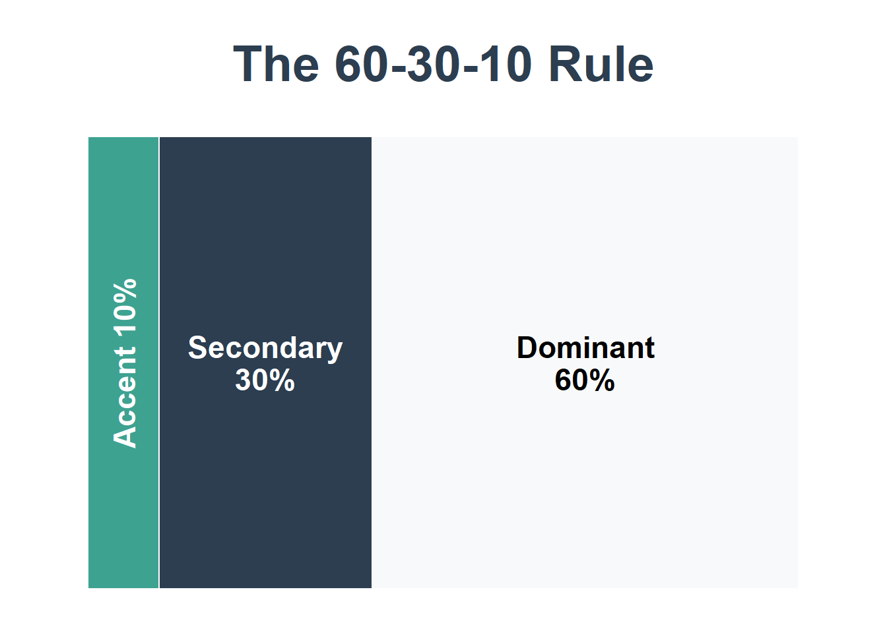

Foundations of Data Visualization
Introduction
A picture is worth a thousand words—but only if it’s the right picture, designed well. Data visualization is one of the most powerful tools nonprofits have for communicating impact, telling compelling stories, and making complex information accessible to diverse audiences.
Poor visualizations can confuse, mislead, or simply fail to communicate your message. Great visualizations can transform raw numbers into compelling narratives that inspire action, secure funding, and drive organizational decisions.
This module will teach you the fundamental principles of effective data visualization, show you common mistakes to avoid, and provide practical guidance for creating visuals that truly communicate.
Why Data Visualization Matters
Data visualizations help you:
Communicate impact quickly: Donors and funders often have limited time—a well-designed chart can convey your impact in seconds
Make data accessible: Not everyone is comfortable with tables and statistics; visuals bridge that gap
Tell compelling stories: Numbers become narratives when paired with effective visuals
Identify patterns and trends: Visualizations help you and your team spot insights that might be hidden in spreadsheets
Support decision-making: Clear visuals help boards and leadership understand options and implications
Common nonprofit use cases:
Annual reports and impact statements
Grant proposals and funder reports
Board presentations
Social media and marketing materials
Program evaluation reports
Internal dashboards for monitoring progress
The Anatomy of Bad Visuals
The data visuals we may deem as “bad” typically have at least one of three things in common:
- Aesthetic Problems: Simply a visual that is harsh on the eyes
- Substantive Problems: The visual has a problem due to the data presented
- Perceptual: The visual is confusing or misleading
Common Mistakes
Using 3D
Problem: 3D effects distort proportions, making it nearly impossible to accurately compare values. The perspective makes slices at the “front” appear larger than slices at the “back” even when they represent the same value.
Example of what NOT to do:
Using 3D pie charts to show budget allocation
Tilting charts at angles that distort perception
Using explosion effects that separate slices
Below is an example of what not to do. Even with the ability to rotate the image, it is still extremely difficult to identify the value of a point on the third dimension, especially in relation to other points on the same scales.
❌
Why it’s bad: The human eye cannot accurately judge angles and depths in 3D space, especially on a 2D screen. A slice representing 25% might look larger or smaller depending on its position.
Better alternative: Plot the points on a 2D plane, but adjust the size of the points to share the third variable. Now it is much easier to identify trends in the data. For example, we can see below that there is a positive correlation between horsepower and displacement, and the size of the points tells us that this correlation holds true for cylinders as well (fewer cylinders correlate with lower displacement and horsepower).
✅

Too Many Colors and Categories
Problem: Using a rainbow of colors with no clear purpose, or trying to show 15+ categories in a single visualization.
Example of what NOT to do:
A pie chart with 12 thin slices in different colors
Line graphs with 8+ overlapping lines
Maps where every county is a different color
Why it’s bad: Beyond 6-7 colors, the visualization becomes visually overwhelming and the audience spends more time decoding the legend than understanding the data.
Better alternative: Group smaller categories into “Other,” focus on the top 5-6 categories, or create multiple simpler charts.
Misleading Axes
Problem: Manipulating axis scales to exaggerate or minimize differences.
Example of what NOT to do:
Starting a y-axis at 95 instead of 0 to make a 2% increase look dramatic
Using inconsistent intervals on axes
Truncating axes to make small changes appear large
❌

Why it’s bad: This distorts the true magnitude of change and can mislead audiences—intentionally or not. It damages credibility and trust. The graph above exaggerates the difference between the Conservative and Labour columns. If you look closely, you’ll notice the difference is rather small, approximately 13,000.
Better alternative: Start axes at zero for bar charts, or clearly label when you’re zooming in on a specific range. Always use consistent intervals. Adjusting the y-axis below, we can see the difference between years is not nearly as dramatic as the original graph portrays it to be.
✅

Chartjunk and Clutter
Problem: Excessive decorative elements, gridlines, borders, shadows, and unnecessary visual effects.
Example of what NOT to do:
Adding clip art or images to bars in a bar chart
Heavy gridlines on every axis
Drop shadows, gradients, and textures
Decorative backgrounds that compete with data
Why it’s bad: Every non-essential element distracts from your message. The data should be the star, not the decoration.
Better alternative: Embrace white space. Use minimal, light gridlines only if they help reading. Remove all decorative elements.
Wrong Chart Type for the Data
Problem: Using a chart type that doesn’t match the data structure or story.
Examples of what NOT to do:
Using a line chart for categorical data (like program types)
Using a pie chart to show change over time
Using a bar chart when the story is about trends over time
Why it’s bad: Different chart types communicate different relationships. Using the wrong type makes patterns harder to see and can confuse your audience.
Better alternative: Match chart type to data type (we’ll cover this in detail below).
The CRAP Principles of Design
The CRAP principles (Contrast, Repetition, Alignment, Proximity) are fundamental design concepts that apply directly to data visualization. Originally from Robin Williams’ “The Non-Designer’s Design Book,” these principles help create visually organized and professional-looking materials.
Contrast
Definition: Elements that are different should look very different, not just slightly different.
In data visualization:
Use strong color contrast between data and background
Make important numbers or insights visually prominent through size, color, or weight
Ensure text is readable (dark text on light background, or vice versa)
Differentiate between categories clearly
Good practices:
Highlighting one data series in color while others are gray
Using bold, larger fonts for titles and key numbers
Creating clear visual hierarchy (titles → subtitles → labels → annotations)
Below is an example of poor contrast. The graph displays the dropout rates for students who enrolled in different programs. The coloring of the text and columns make it difficult to know where first to look and how to scan the image. Because of this, the story is lost.
❌

The graph below does a much better job with managing contrast, which allows the audience to quickly scan the image left to right and top down, and identify the important finding.
✅

The Gestalt Principles of Perception
While CRAP principles help with layout and design, Gestalt principles explain how the human brain perceives and organizes visual information. Understanding these helps you design visualizations that work with natural human perception.

Gestalt Rules:
Proximity: Things that are near to one another seem to be related
Similarity: Things that look alike seem to be related
Connections: Visually tied are related
Continuity: Partially hidden shapes are perceived as completed into familiar shapes
Closure: incomplete shapes are perceived as complete
Figure-Ground: People automatically separate a visual field into a “figure” (the main subject) and a “ground” (the background)
Common Fate: Elements sharing a direction of movement are perceived as a unit
Choosing the Right Chart Type
One of the most critical decisions in data visualization is selecting the appropriate chart type for your data and message. Here’s a practical guide:
Colors
When used well, color can guide attention, show relationships, and make complex data intuitive. Colors should enhance figures and not make them more difficult to read. Less is typically more. A good rule of thumb is to follow the 60-30-10 rule: 60% dominate color, 30% secondary color, 10% accent color.
Remember to consider accessibility of your audience. Choose colorblind-friendly palettes. Approximately 1 in 12 men (8%) and 1 in 200 women have some form of color blindness, the most common being red/green blindness which can affect the person even if the color only contains some red or green, such as purple. Use sites like Color Codes color picker and David Nichols’ Coloring for Colorblindness which have built-in color blindness simulators, contrast checker, and more to help you select the best color palette. If you are matching colors from an existing brand or image, imagecolorpicker.com can identify the exact color code from any uploaded image.

Best Practices
Use Color Purposefully
Every color should have a meaning
Don’t add color just for decoration
Limit your palette to 3-5 colors maximum
Choose Accessible Colors
Ensure sufficient contrast (use online contrast checkers)
Avoid red-green combinations (colorblind-friendly)
Test your visualizations in grayscale
Use Sequential Colors for Ordered Data
Light to dark for low to high values
Single-hue gradients (light blue → dark blue)
Typography
Text is often overlooked but critical to effective visualizations.
Font Best Practices
Choose Readable Fonts
Sans-serif fonts (Arial, Helvetica, Calibri) for digital displays
Avoid decorative or script fonts for data
Create Hierarchy Through Size
Chart title: Largest (18-24pt)
Axis titles: Medium (12-14pt)
Axis labels: Smaller (10-12pt)
Annotations: Same as axis labels or slightly smaller
Use Font Weight Strategically
Bold for titles and key numbers
Regular weight for most text
Avoid italics (harder to read)
Ensure Legibility
Minimum font size: 10pt for print, 12pt for screens
Avoid all caps for body text
Use sufficient line spacing
Align Text Thoughtfully
Left-align most text (easiest to read)
Center-align titles when appropriate
Right-align numbers in tables
A Simple Visualization Checklist
Before sharing any visualization, ask yourself:
Clarity
Can someone understand the main message in 5 seconds?
Is the chart type appropriate for the data?
Are axes clearly labeled?
Is there a clear title that tells the story?
Design
Is there sufficient contrast between elements?
Are colors used purposefully and consistently?
Is text readable (size, font, contrast)?
Have I removed all unnecessary elements (chartjunk)?
Is there adequate white space?
Accuracy
Are axes scaled appropriately?
Are data sources cited?
Are numbers accurate and up-to-date?
Have I avoided misleading representations?
Accessibility
Is this colorblind-friendly?
Can it be understood in grayscale?
Is text large enough to read?
If digital, is it screen-reader compatible?
Context
Is there enough context for the audience to understand?
Have I explained any necessary terms or abbreviations?
Does this visualization support my overall narrative?
Tools
Datawrapper (Free for basic use)
Flourish (Free for basic use)
Tableau
Power BI
Further Reading
Need Help? If you have questions or would like personalized guidance on implementing these practices in your organization, please contact me.